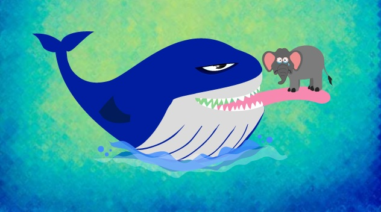
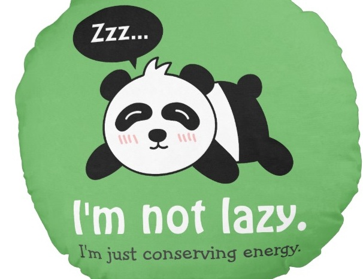
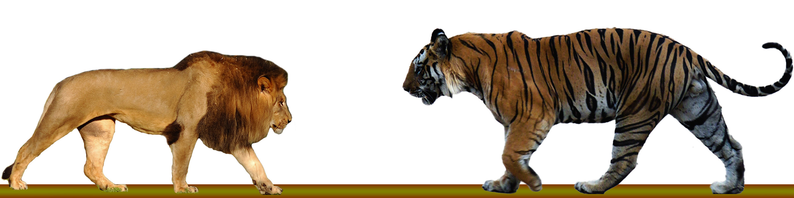
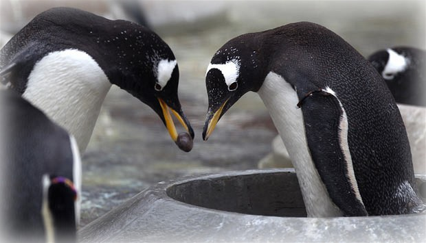
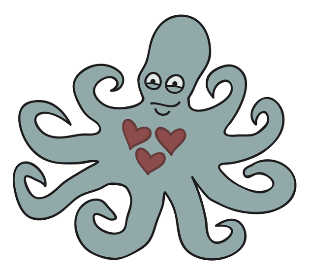

1. Cows can sleep standing up, but they can only dream lying down.
2. It is much easier for dogs to learn spoken commands if they are given in conjunction with hand signals or gestures. 
3. Just one cow gives off enought harmful methane gas in a single day to fill around 400 litre bottles. 
4. Did you know that cows have four stomaches? 
5. The blue whale weights as much as 40 elephants and is as long as greyhound buses. 
6. Most elephats weigh less than the tongue of a blue whale.
7. Pandas don't have particular sleeping spots; they simply fall asleep whenever they happen to be.
8.The tiger is the biggest species of the cat family.
9. A male penguin offers a pebble to a female penguin. If she takes it, they become partners. Some penguins don't build nests, instead they carry their eggs on thier feet. 
In courtesy of: Observation of Animal Behaviour
10. Octupuses have three hearts

-
Aims and Goals
Rescue individuals, safeguard populations, and preserve habitat.
-
Respect and protect animals
-
Sustain healthy living for animals
-
Stop animal cruelty
Articles and Links
- "Poor shih tzu suffers so much pain, becomes deaf after being hit with a steel pipe on the head"
- "PAWS gets about 40 reports of animal abuse daily"
- "PAWS sues ‘Oro’ makers for violation of Animal Welfare Act"
- "How to stop the spread of rabies"
- "DepEd employee convicted for beating dog, fined P1,000"
- "Judge fines dog beater P1K"